Компилируемые языки
Что это такое?
Компилируемые языки преобразуют исходный код в машинный код (исполняемый файл) с помощью компилятора перед запуском программы. Этот процесс называется компиляцией.
Особенности:
• Высокая производительность — код оптимизирован под конкретную архитектуру процессора
• Раннее обнаружение ошибок — проверка типов и синтаксиса на этапе компиляции
• Защита исходного кода — распространение в виде исполняемых файлов
• Зависимость от платформы — нужна перекомпиляция для разных ОС/архитектур
• Более сложная отладка — нет прямого соответствия между машинным и исходным кодом
Примеры компилируемых языков
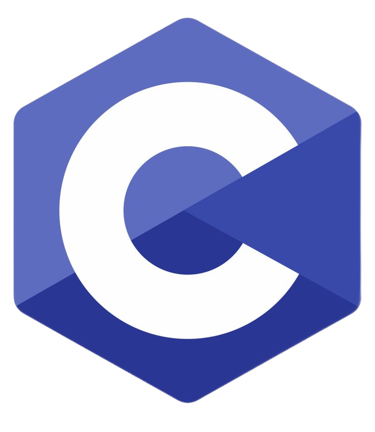
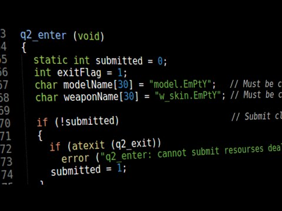
C — компилируемый статически типизированный язык программирования общего назначения, разработанный в 1969—1973 годах сотрудником Bell Labs Деннисом Ритчи как развитие языка B.
Первоначально был разработан для реализации операционной системы UNIX, но впоследствии был перенесён на множество других платформ. Согласно дизайну языка, его конструкции близко сопоставляются типичным машинным инструкциям, благодаря чему он нашёл применение в проектах, для которых был свойственен язык ассемблера, в том числе как в операционных системах, так и в различном прикладном программном обеспечении для множества устройств — от суперкомпьютеров до встраиваемых систем. Основная особенность C - ручное управление памятью. Довольно труден в изучении из-за того, что нужно понимать работу памяти.
.png)

C++ — компилируемый, статически типизированный язык программирования общего назначения. Является мультипарадигменным языком программирования: поддерживаются такие парадигмы, как процедурное программирование, объектно-ориентирован-
ное программирование, обобщённое программирование, функциональное программирование. C++ широко используется для разработки программного обеспечения, являясь одним из самых популярных языков программирования. Область его применения включает создание операционных систем, разнообразных прикладных программ, драйверов устройств, приложений для встраиваемых систем, высокопроизводительных серверов, а также компьютерных игр.
.png)
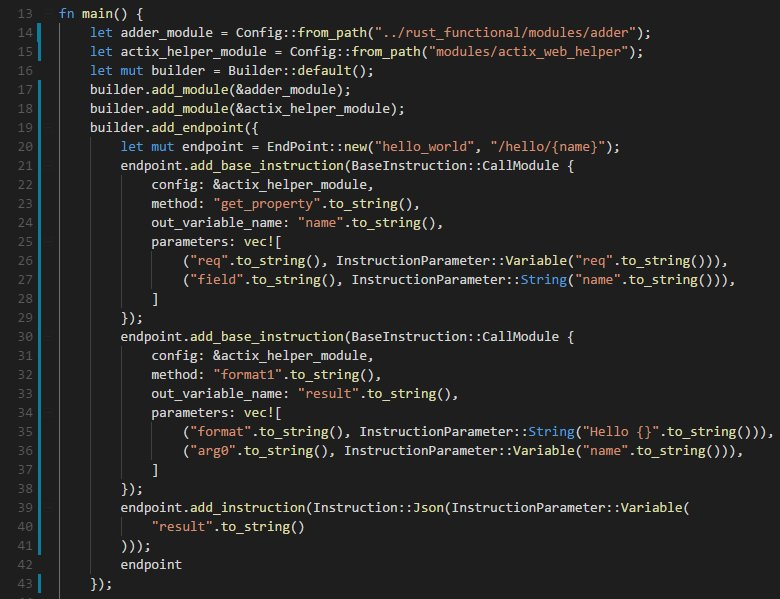
Rust - компилируемый язык программирования общего назначения, сочетающий парадигмы функционального и процедурного программирования с объектной системой.
Управление памятью осуществляется через механизм «владения» с использованием аффинных типов, что позволяет обходиться без системы сборки мусора во время исполнения программы. Rust гарантирует безопасную работу с памятью благодаря встроенной в компилятор системе статической проверки ссылок. Имеются средства, позволяющие использовать приёмы объектно-ориентированного программирования.Ключевые приоритеты языка: безопасность, скорость и параллелизм. Rust пригоден для системного программирования, в частности, он рассматривается как перспективный язык для разработки ядер операционных систем. Rust сопоставим по скорости и возможностям с C/C++, однако даёт большую безопасность при работе с памятью, что обеспечивается встроенными в язык механизмами контроля ссылок. Производительности программ на Rust способствует использование «абстракций с нулевой стоимостью»
.png)
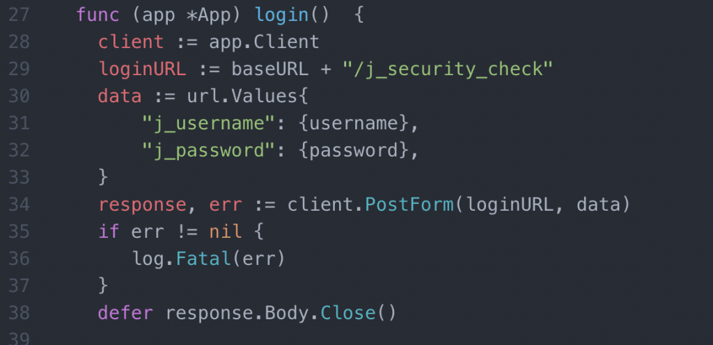
Go - компилируемый многопоточный язык программирования, разработанный внутри компании Google. Использует объектно-ориентированный (структурный) стиль с поддержкой функциональных элементов.
На данный момент поддержка официального компилятора, разрабатываемого создателями языка, осуществляется для операционных систем FreeBSD, OpenBSD, Linux, macOS, Windows, DragonFly BSD, Plan 9, Solaris, Android, AIX, Haiku OS. Также Go поддерживается набором компиляторов gcc, существует несколько независимых реализаций. Язык Go разрабатывался как язык программирования для создания высокоэффективных программ, работающих на современных распределённых системах и многоядерных процессорах. Он может рассматриваться как попытка создать замену языкам Си и C++ с учётом изменившихся компьютерных технологий и накопленного опыта разработки крупных систем. По словам Роба Пайка, «Go был разработан для решения реальных проблем, возникающих при разработке программного обеспечения в Google»
Интерпретируемые языки
Что это такое?
Интерпретируемые языки выполняются построчно интерпретатором без предварительной компиляции в машинный код.
Особенности:
• Кроссплатформенность — один код работает везде, где есть интерпретатор
• Интерактивная разработка — REPL (Read-Eval-Print Loop)
• Динамическая типизация — типы определяются во время выполнения
• Более медленное выполнение — накладные расходы на интерпретацию
• Простота отладки — прямое соответствие исходного и исполняемого кода
Примеры интерпритируемых языков
.png)
.png)
Python — мультипарадигменный высокоуровневый язык программирования общего назначения с автоматическим управлением памятью, ориентированный на повышение производительности разработчика, читаемости кода и его качества.
Python является мультипарадигменным языком программирования, поддерживающим императивное, процедурное, структурное, функциональное, асинхронное, объектно-ориентированное программирование и метапрограммирование. Задачи обобщённого программирования решаются за счёт динамической типизации. Аспектно-ориентированное программирование частично поддерживается через декораторы, более полноценная поддержка обеспечивается дополнительными фреймворками.


JavaScript — мультипарадигменный язык программирования. Поддерживает объектно-ориентированный, императивный и функциональный стили. Является реализацией спецификации ECMAScript. JavaScript обычно используется как встраиваемый язык для программного доступа к объектам
приложений. Наиболее широкое применение находит в браузерах как язык сценариев для придания интерактивности веб-страницам. JavaScript используется в клиентской части веб-приложений: клиент-серверных программ, в котором клиентом является браузер, а сервером — веб-сервер, имеющих распределённую между сервером и клиентом логику. Обмен информацией в веб-приложениях происходит по сети. Одним из преимуществ такого подхода является тот факт, что клиенты не зависят от конкретной операционной системы пользователя, поэтому веб-приложения являются кроссплатформенными сервисами.
.png)

Ruby — динамический, рефлективный, интерпретируемый высокоуровневый язык программирования. Ruby позволяет обрабатывать исключения, как Java или Python.
Язык обладает независимой от операционной системы реализацией многопоточности, сильной динамической типизацией, сборщиком мусора и многими другими возможностями. По особенностям синтаксиса он близок к языкам Perl и Eiffel, по объектно-ориентированному подходу — к Smalltalk. Также некоторые черты языка взяты из Python, Lisp, Dylan и Клу.
.png)
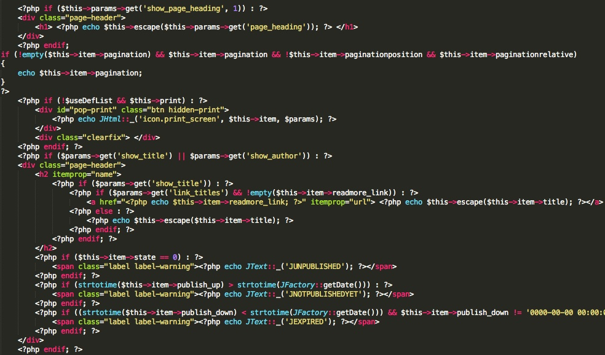
PHP — скриптовый язык общего назначения, интенсивно применяемый для разработки веб-приложений. В настоящее время поддерживается подавляющим большинством хостинг-провайдеров и является одним из лидеров среди языков, применяющихся для создания динамических веб-сайтов.
В области веб-программирования, в частности, серверной части, PHP — один из популярных сценарных языков (наряду с JSP, Perl и языками, используемыми в ASP.NET). Популярность в области построения веб-сайтов определяется наличием большого набора встроенных средств и дополнительных модулей для разработки веб-приложений.
Языки виртуальных машин
Что это такое?
Код компилируется в промежуточный байт-код, который выполняется виртуальной машиной (JVM для Java, CLR для .NET).
Особенности:
• "Write once, run anywhere" — кроссплатформенность через виртуальную машину
• Управляемая память — автоматическая сборка мусора
• Богатые стандартные библиотеки
• JIT-компиляция — Just-In-Time компиляция в машинный код
• Инструменты профилирования — мониторинг производительности
Примеры языков виртуальных машин
.png)
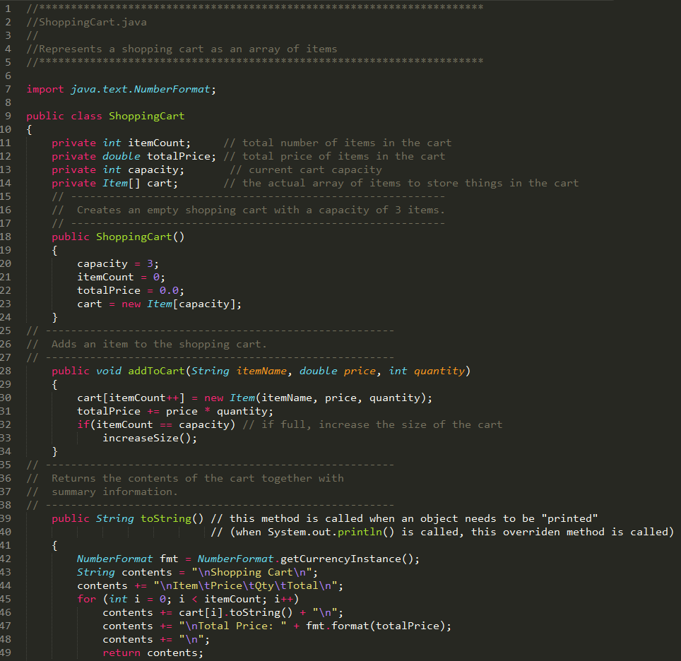
Java — строго типизированный объектно-ориентированный язык программирования общего назначения, разработанный компанией Sun Microsystems (в последующем приобретённой компанией Oracle). Разработка ведётся сообществом, организованным через Java Community Process.
Программы на Java транслируются в байт-код Java, выполняемый виртуальной машиной Java (JVM) — программой, обрабатывающей байтовый код и передающей инструкции оборудованию как интерпретатор. Достоинством подобного способа выполнения программ является полная независимость байт-кода от операционной системы и оборудования, что позволяет выполнять Java-приложения на любом устройстве, для которого существует соответствующая виртуальная машина.
 (1).png)

C# (произносится си шарп) — объектно-ориентированный язык программирования общего назначения. C# относится к семье языков с C-подобным синтаксисом, из них его синтаксис наиболее близок к C++ и Java.
Практически все игры и приложения, которыми мы пользуемся были созданы на C#. C# относится к семье языков с C-подобным синтаксисом, из них его синтаксис наиболее близок к C++ и Java. Язык имеет статическую типизацию, поддерживает полиморфизм, перегрузку операторов (в том числе операторов явного и неявного приведения типа), делегаты, атрибуты, события, переменные, свойства, обобщённые типы и методы, итераторы, анонимные функции с поддержкой замыканий, LINQ, исключения, комментарии в формате XML.
.png)
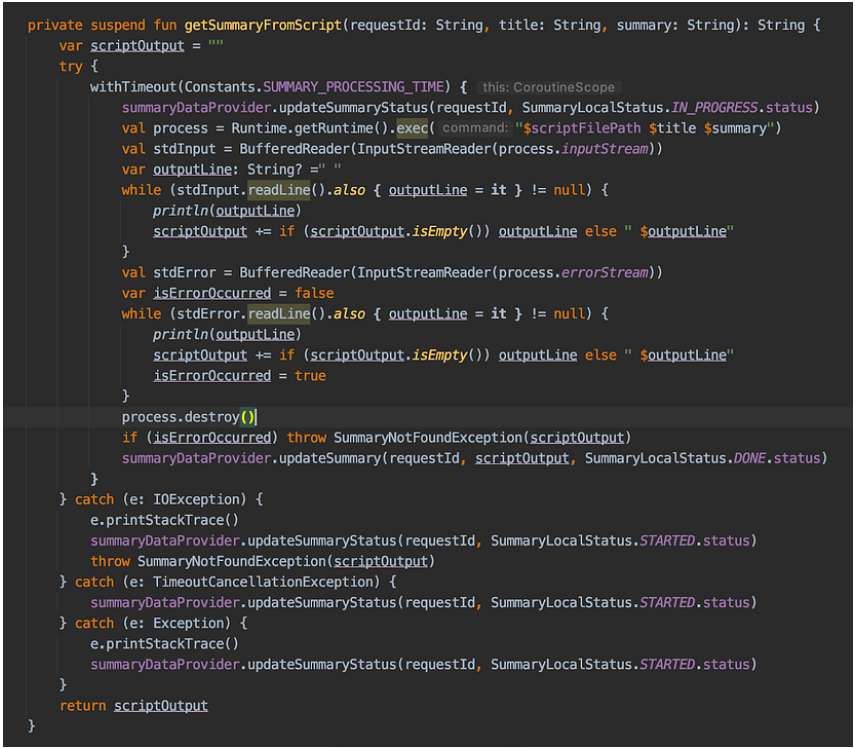
Kotlin — кроссплатформенный, статически типизированный, объектно-ориентированный язык программирования, работающий поверх Java Virtual Machine и разрабатываемый компанией JetBrains. Также компилируется в JavaScript и в исполняемый код ряда платформ через инфраструктуру LLVM.
Авторы ставили целью создать язык более лаконичный и типобезопасный, чем Java, и более простой, чем Scala. Следствием упрощения по сравнению со Scala стали также более быстрая компиляция и лучшая поддержка языка в IDE. Язык полностью совместим с Java, что позволяет Java-разработчикам постепенно перейти к его использованию; в частности, язык также встраивается в Android, что позволяет для существующего Android-приложения внедрять новые функции на Kotlin без переписывания приложения целиком.
.png)

Scala — мультипарадигмальный язык программирования, спроектированный кратким и типобезопасным для простого и быстрого создания компонентного программного обеспечения, сочетающий возможности функционального и объектно-ориентированного программирования.
Scala-программы во многом похожи на Java-программы, и могут свободно взаимодействовать с Java-кодом. Язык включает единообразную объектную модель — в том смысле, что любое значение является объектом, а любая операция — вызовом метода. При этом является также функциональным языком в том смысле, что функции — это полноправные значения. В Scala включены мощные и единообразные концепции абстракций как для типов, так и для значений. В частности, язык содержит гибкие симметричные конструкции примесей для композиции классов и типажей. Возможно позволяет производить декомпозицию объектов путём сравнения с образцом.
Функциональные языки
Что это такое?
Акцент на функциях как основных строительных блоках, иммутабельности данных и отсутствии побочных эффектов.
Особенности:
• Функции первого класса — функции как значения
• Иммутабельность — данные не изменяются, создаются новые
• Отсутствие побочных эффектов — предсказуемость
• Ленивые вычисления — вычисления только когда нужны
• Cложная кривая обучения — другая парадигма мышления
Примеры функциональных языков
.png)

Haskell — стандартизированный чистый функциональный язык программирования общего назначения. Является одним из самых распространённых языков программирования с поддержкой отложенных вычислений.
Система типов — полная, сильная, статическая, с автоматическим выводом типов, основанная на системе типов Хиндли — Милнера. Поскольку язык функциональный, то основная управляющая структура — это функция. Отличительная черта языка — серьёзное отношение к типизации; во многом в связи с этим язык назван в честь исследователя теории типов и изобретателя комбинаторной логики Хаскелла Карри. Имеются средства взаимодействия с кодом на других языках программирования. Есть встроенная поддержка многозадачного и параллельного программирования, развитый инструментарий (средства автоматического тестирования, отладки и профилирования, в том числе для параллельных программ), существует несколько тысяч библиотек с открытым исходным кодом.

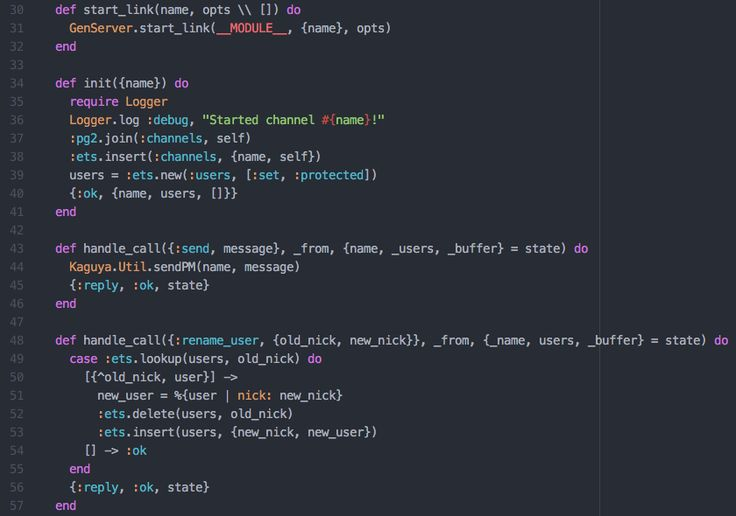
Elixir — функциональный, распределённый язык программирования общего назначения. Построен поверх Erlang, что обеспечивает распределённость, отказоустойчивость, исполнение в режиме мягкого реального времени, метапрограммирование.
Язык программирования Elixir используется для разработки веб-приложений с помощью полнофункциональной экосистемы веб-приложений Phoenix, а также HTTP-сервера Cowboy. Язык поддерживает Unicode и UTF-8-строки. Реализована поддержка документирования кода, по синтаксису напоминающая строки документации языка Python, но в формате Markdown.
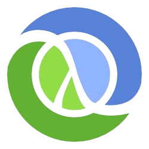

Clojure — современный диалект Лиспа, язык программирования общего назначения с поддержкой разработки в интерактивном режиме, поощряющий функциональное программирование и упрощающий поддержку многопоточности.
Clojure лучше всего работает для финансового рынка, дата-аналитики, машинного обучения — сфер, где основной фокус делается на данных, которые нужно быстро обрабатывать. Однако для веб и фронтенда Clojure тоже отлично работает, даже через собственные библиотеки, построенные на React. Знаю примеры, когда разработчики даже делали игры на Clojure — точнее, на нём делалась логика игры, все остальное, конечно, писалось в Unity.
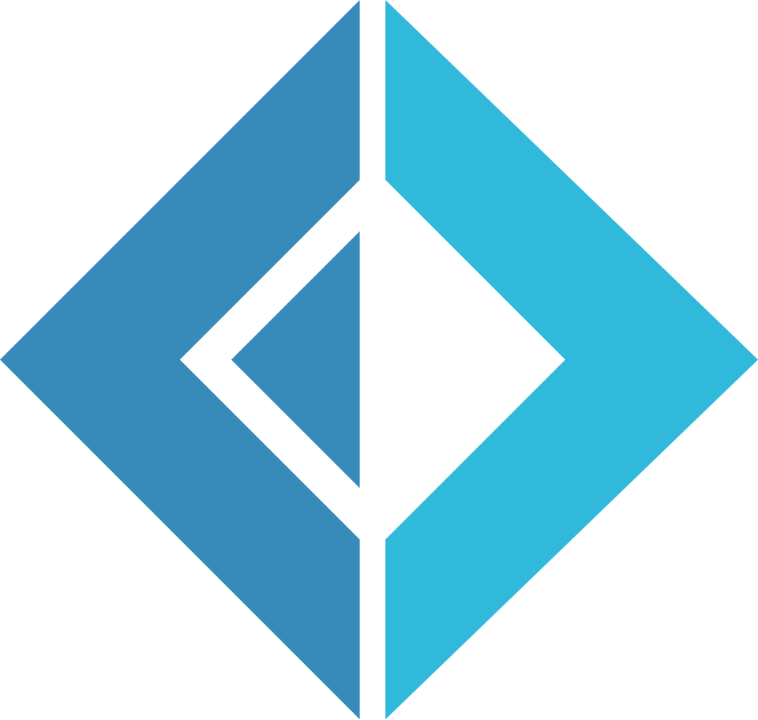
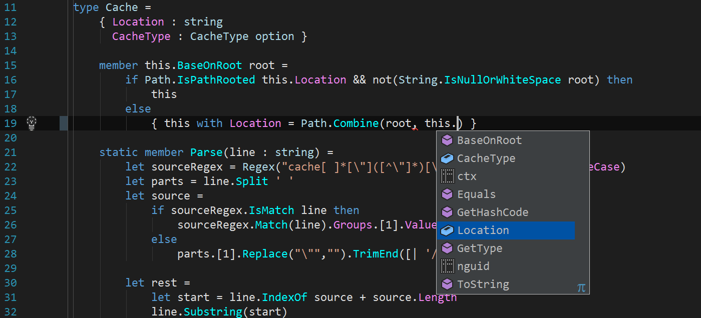
F# (произносится эф-шарп) — мультипарадигмальный язык программирования из семейства языков .NET, поддерживающий функциональное программирование в дополнение к императивному (процедурному) и объектно-ориентированному программированию.
F# нацелен на упрощение работы с Big Data и многопоточность, то есть востребован в науке, в создании искусственного интеллекта, там, где используются динамические базы данных, а также для улучшенного использования ресурсов многоядерных процессоров. Иначе говоря, F# можно использовать практически везде, будь на то ваша воля.
Специализированные языки
Что это такое?
Специализированные языки - это языки, созданные для решения конкретных узких задач с максимальной эффективностью.
Особенности:
• Узкая специализация — оптимальны для своей области
• Высокий уровень абстракции в предметной области
• Часто декларативные — описывают ЧТО, а не КАК
• Интеграция с другими языками
• Ограниченное применение вне своей области
Примеры специализированных языков


SQL — декларативный язык программирования, применяемый для создания, модификации и управления данными в реляционной базе данных, управляемой соответствующей системой управления базами данных.
Согласно актуальным исследованиям DB-Engines, SQL продолжает доминировать в мире управления данными. Системы, использующие этот язык запросов, лидируют в рейтинге, занимая первые четыре позиции. При всех своих изменениях SQL остаётся самым распространённым лингвистическим средством для взаимодействия прикладного программного обеспечения с базами данных. В то же время современные СУБД, а также информационные системы, использующие СУБД, предоставляют пользователю развитые средства визуального построения запросов.

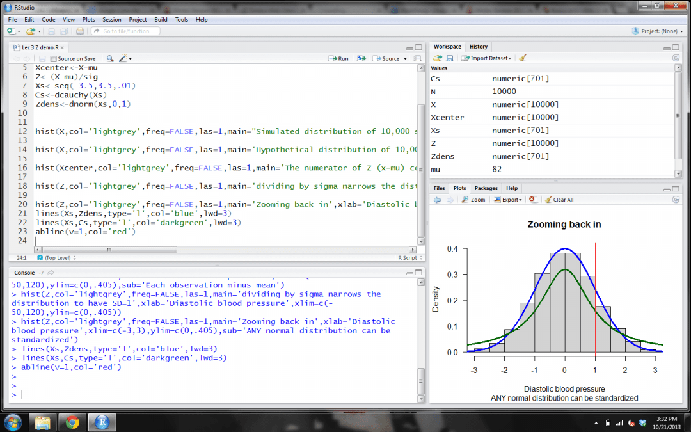
R — язык программирования для статистической обработки данных и работы с графикой, а также свободная программная среда вычислений с открытым исходным кодом в рамках проекта GNU. Широко используется как статистическое программное обеспечение для анализа данных.
Сам язык имеет довольно ограниченные и не слишком удобные средства описания данных, но это компенсируется наличием библиотечных средств, которые позволяют загружать в виде таблиц R наборы данных, представленных в большинстве открытых и многих проприетарных форматах. Так, в R могут быть легко загружены таблицы в простом текстовом формате, таблицы Excel различных версий, данные в форматах CSV, XML и многих других.
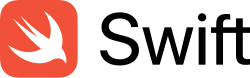
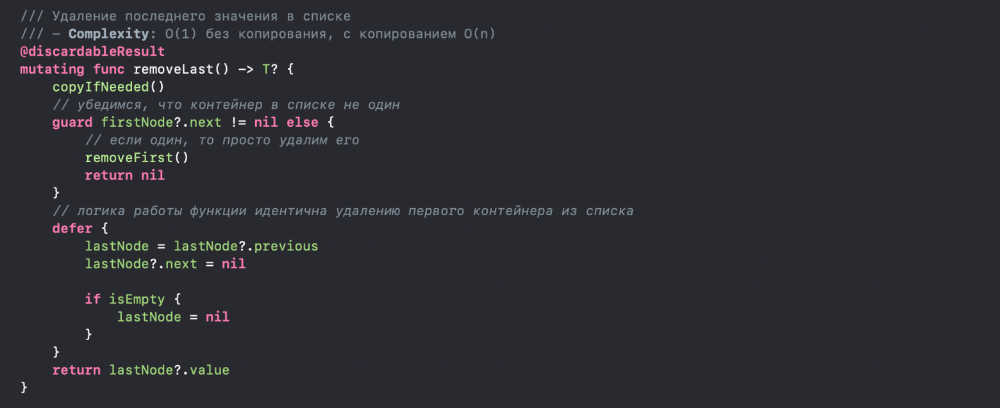
Swift — открытый мультипарадигмальный компилируемый язык программирования общего назначения, разработанный и поддерживаемый компанией Apple. Первая версия была представлена в 2014 году.
Чаще всего Swift используется в разработке приложений для macOS, iOS, iPadOS, watchOS, tvOS и VisionOS, однако язык также доступен для Windows и Linux. На платформах Apple язык работает с фреймворками Cocoa и Cocoa Touch и совместим с основной кодовой базой Apple, написанной на более раннем языке Objective-C. Swift задумывался как более лёгкий для чтения и устойчивый к ошибкам программиста язык: существенная часть проблем, которые в случае с Objective-C обнаруживаются только при исполнении программ и приводят к крашам, в Swift в принципе не позволят скомпилировать код.
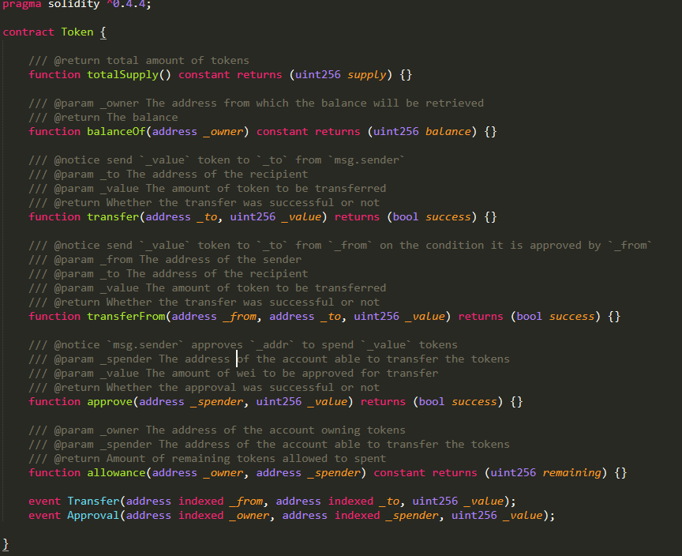
Solidity — объектно-ориентированный, предметно-ориентированный язык программирования самовыполняющихся контрактов для платформы Ethereum.
Статически типизированный JavaScript-подобный язык программирования, создан для разработки самовыполняющихся контрактов, исполняющихся на виртуальной машине Ethereum (EVM). Программы транслируются в байткод EVM. Позволяет разработчикам создавать самодостаточные приложения, содержащие бизнес-логику, результирующую в неотменяемые транзакционные записи блокчейна.
.png)